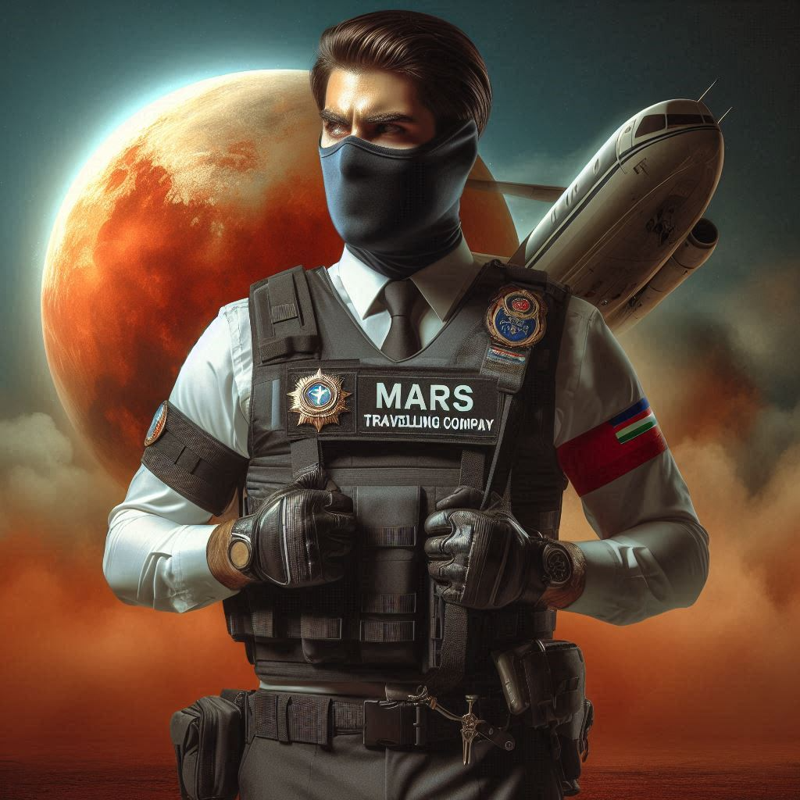
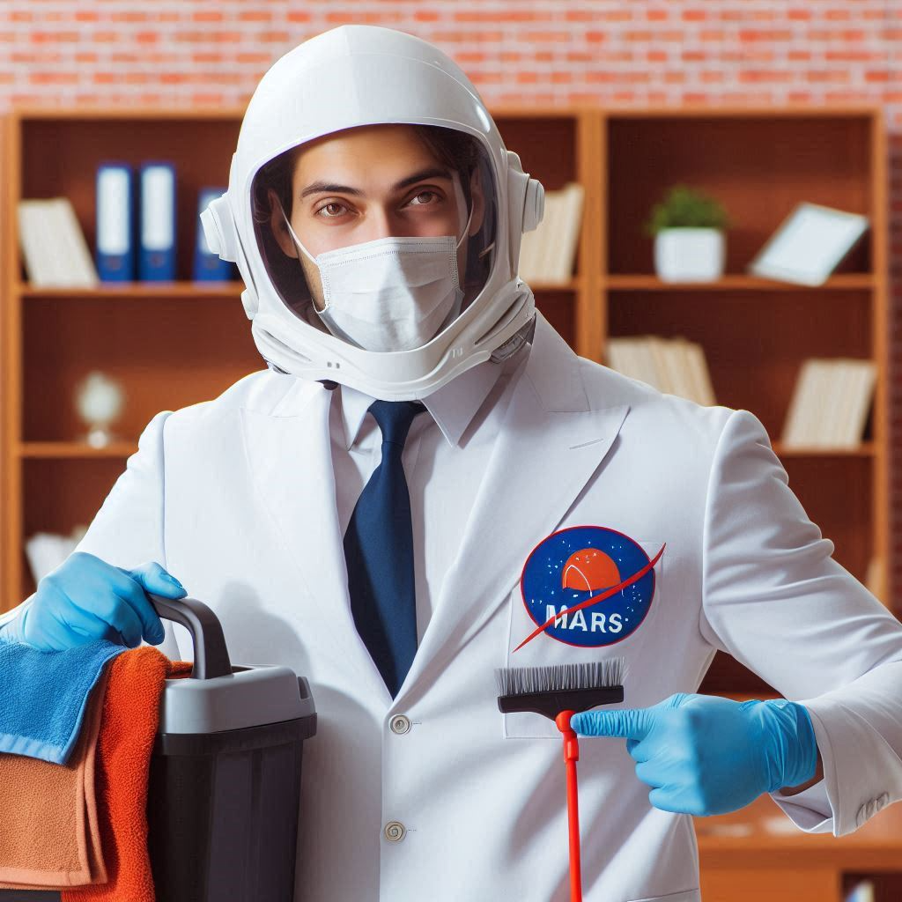

MARSA
Mars Advanced Research and Settlement Agency
VAŠE CESTA ZAČÍNÁ ZDE!
Index
- Poznejte tým
- Naše služby
- Proces
- Vize budoucnosti
Poznejte tým
CEO
Má na starosti strategické řízení a plánování mise, včetně dlouhodobých cílů a rozpočtů. Koordinuje celý tým, aby zajistil bezpečnost, efektivitu a úspěšnost vesmírných letů.

Travel Agent
pomáhá klientům naplánovat a zorganizovat jejich meziplanetární cestu, včetně výběru termínu a přípravy na dlouhý let. Zajišťuje veškeré detaily cesty. Také poskytuje informace o bezpečnosti, vybavení a připravuje cestovatele na specifické podmínky, které ho na Marsu čekají.
Security
Zaměřuje se na ochranu posádky a zajištění jejich bezpečnosti. Pravidelně provádí bezpečnostní školení, aby každý člen posádky věděl, jak se zachovat v případě krizové situace. Dále monitoruje vnější prostředí, aby včas identifikoval potenciální hrozby.
Janitor
Stará se o úklid a údržbu jak pozemních, tak vesmírných prostor, aby byly čisté a bezpečné pro posádku a cestující. Dbá na hygienu a funkčnost vybavení.
Naše služby
- Interplanetární cestování: Bezpečné a pohodlné mise na Mars pro výzkumníky a budoucí obyvatele.
- Výzkumné a vývojové služby: Podpora v objevování nových zdrojů a životních podmínek na Marsu.
- Kolonizační infrastruktura: Výstavba životních modulů, energetických zdrojů a závlahových systémů pro osídlení Marsu.
- Turistické mise na Mars: Příležitost navštívit nejzajímavější oblasti, jako např. Olympus Mons
Proces k dosažení Marsu
- 1. Plánování mise: Příprava trajektorie letu, časového harmonogramu a potřebného vybavení.
- 2. Vývoj a testování technologie: Konstrukce kosmické lodi s nezbytnými systémy, ochrana proti radiaci a trénink posádky.
- 3. Cesta na Mars: Start v optimálním časovém okně a dlouhý přelet k Marsu (6–9 měsíců).
- 4. Přistání a zahájení mise: Bezpečné přistání, vytvoření základní infrastruktury a zahájení vědeckých aktivit.
Budoucí vize pro kolonizaci Marsu
- Průzkum dalších oblastí: Využití zdrojů na Marsu pro energetickou soběstačnost a produkci stavebních materiálů.
- Meziplanetární spojení: Pravidelné lety mezi Zemí a Marsem, rozvoj komerčních letů a meziplanetární obchod.
- Výzkum a inovace: Rozvoj nových technologií pro život v kosmu a jejich aplikace na Zemi.